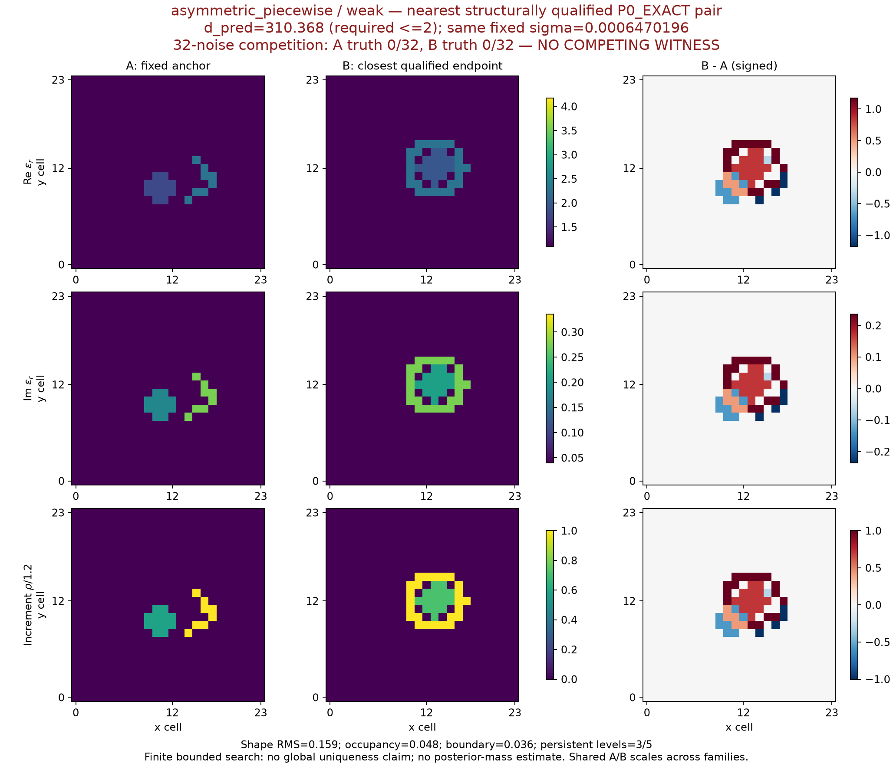
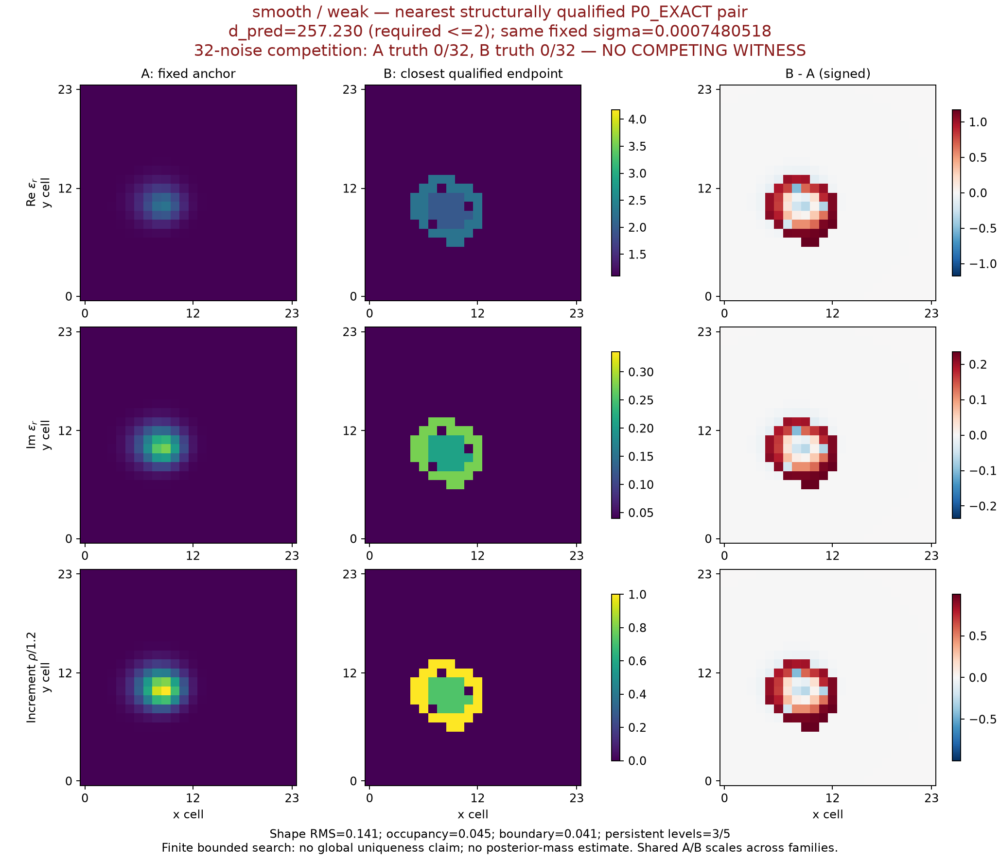
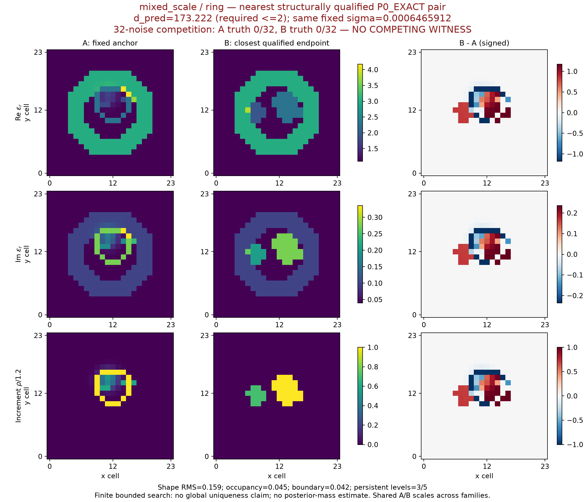

原先验支持与竞争材料见证：科学图库
NO_GO_FOR_GENERATOR_COMPARISON
E1未发现合格竞争见证：4族中结构合格的最近材料对，预测间距均超过门槛2，两端噪声重放竞争均0/32。E2未激活。有限搜索没有证明全局唯一性，歧义仍未解决。
本图库只读取现存材料数组、已缓存精确预测审计和已完成E1指标。新增物理状态/RHS/分解/训练均为0；不读取truth指导选择或搜索。点似然不是posterior质量。
同一历史观测：强Top-1与数据可行的补偿材料
p250065_ring：展示原N3、minchange_base及T v1 edit00补偿端点。N3保留历史强Top-1身份，但本噪声球检验失败。两种T材料在历史噪声球内可行，却被原固定增量相位/范围必要条件排除；N3同样不属于原先验的必要支持规则。色标逐行固定，εᵣ=1+χ；ρ⊥=Im[conj(v)(χ−χ背景)]，v=(1+0.2i)/√1.04。
本图只画材料与相位偏离；ell数值直接复用cached_audit，未重新计算物理。绝对空气孔洞不能代替原增量先验的结构定义。
PDF
shell：原先验内的最近结构合格材料对
d_pred=49.224，远高于冻结门槛2；两端各32次固定噪声重放，竞争支持均为0/32。它是有限搜索中的负结果，不是多解成功。
PDF
asymmetric_piecewise：原先验内的最近结构合格材料对
d_pred=310.368，远高于冻结门槛2；两端各32次固定噪声重放，竞争支持均为0/32。它是有限搜索中的负结果，不是多解成功。
PDF
smooth：原先验内的最近结构合格材料对
d_pred=257.230，远高于冻结门槛2；两端各32次固定噪声重放，竞争支持均为0/32。它是有限搜索中的负结果，不是多解成功。
PDF
mixed_scale：原先验内的最近结构合格材料对
d_pred=173.222，远高于冻结门槛2；两端各32次固定噪声重放，竞争支持均为0/32。它是有限搜索中的负结果，不是多解成功。
PDF
可复核数据与边界
全部绘图源数据JSON · 冻结协议 · E1裁决 · 候选材料对
图中A/B材料色标跨family固定；差分色标为各材料对对称色标。网格为24×24原数组，显示cell索引，不插值。每个family选取E1_SEARCH中P0_EXACT且结构合格的最小d_pred，未依据truth或误差挑选。噪声支持频率为同时满足两端噪声球及|Δell|≤log10的频率，不是posterior质量。
实际绘图后处理耗时 2.900 秒；物理调用0。E1本身预算与失败账本请见主报告，本图库的0新增物理不覆盖已经完成的E1运行。